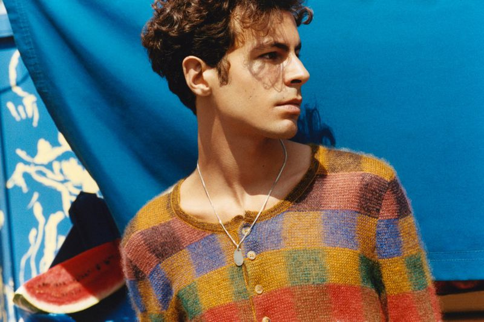
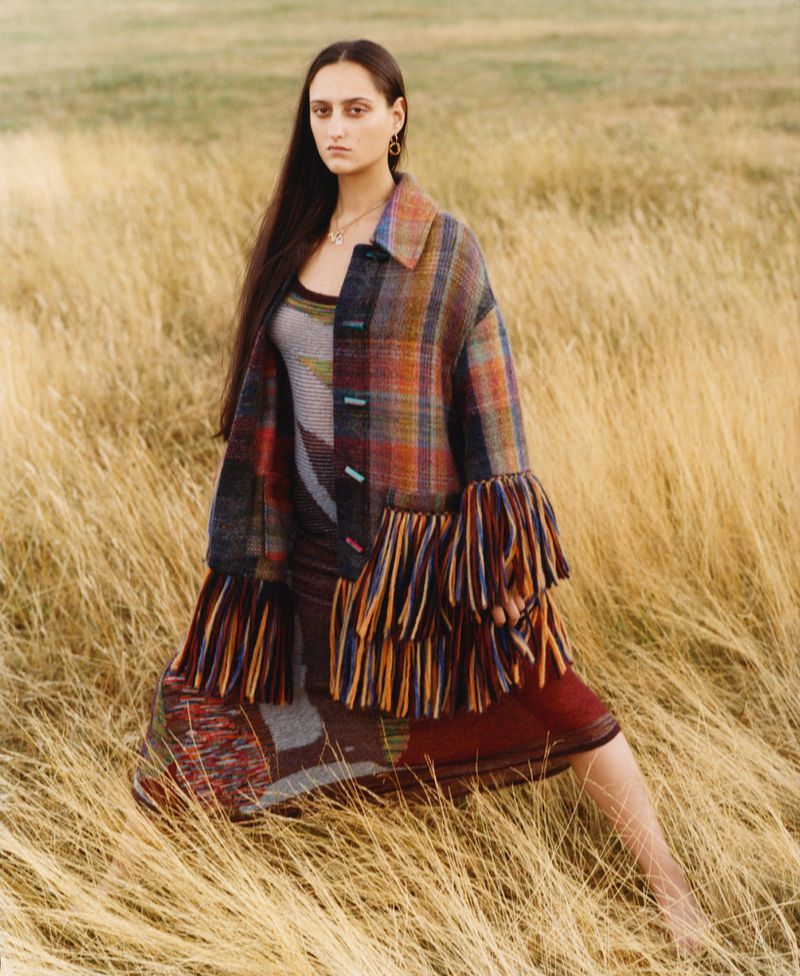
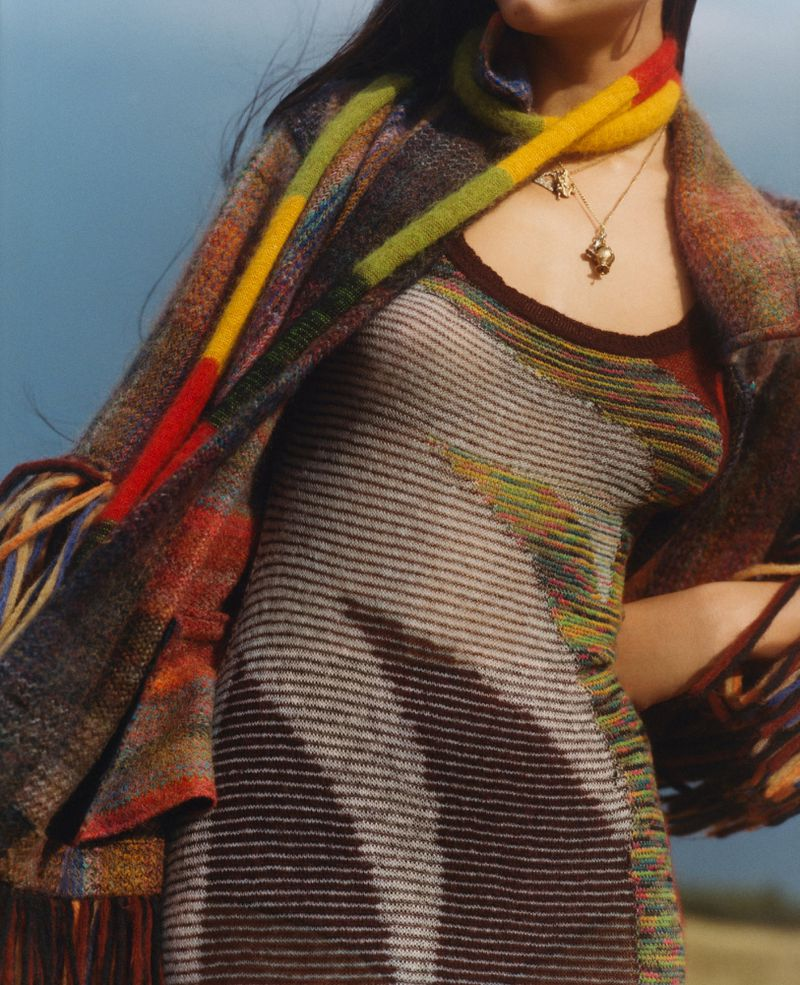
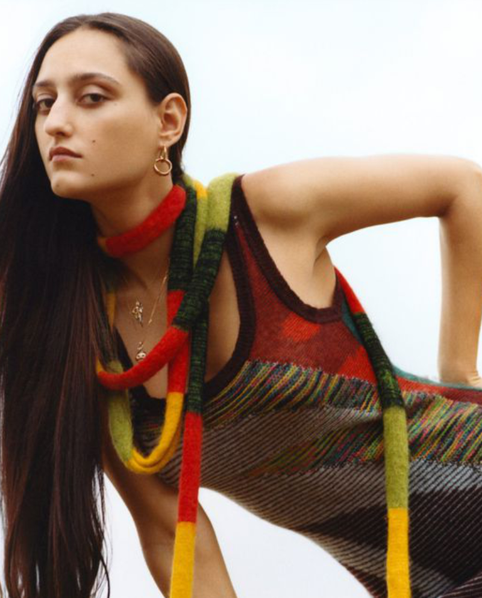
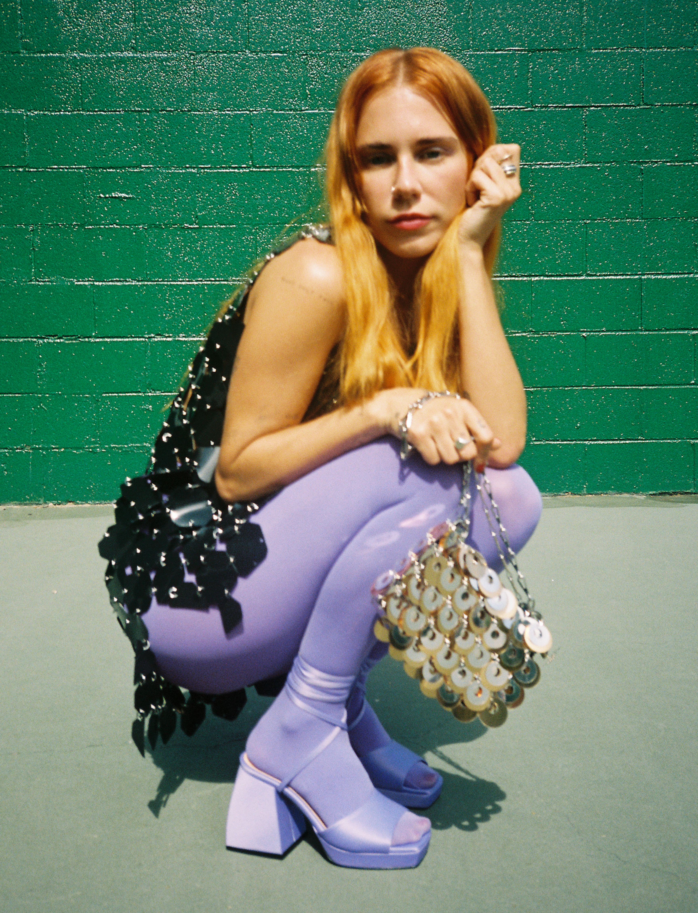

Introducing Missoni’s latest collection through a location shoot on Hampstead Heath. Starring Jess Maybury, the campaign juxtaposes Italian vibrance against a quintessentially British landscape. Photography by Laura Jane Coulson, Styling Eliza Conlon.




